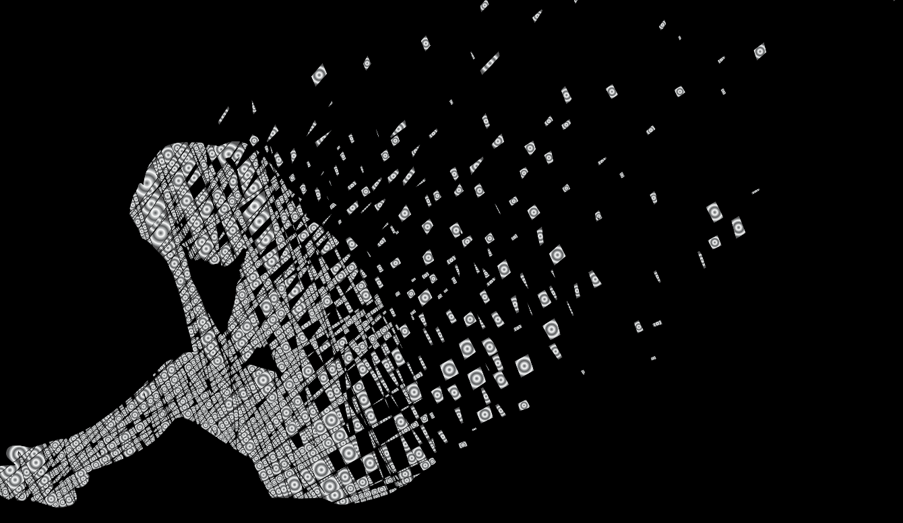

डिप्रेसन

बेलामौकामा दिक्क जसलाई पनि लाग्छ । उदास पार्ने घटना जसको जिन्दगीमा पनि घटन् सक्दछ । भनाइ नै छ, चिन्ता नहुने त मान्छे नै हुदैन । तर सीमा जे कुराको पनि हुन्छ । तीव्रता होस् या समयावधि ,उदसिपनाले निश्चित सीमा नाघेपछि चाहिं त्यसलाई सामान्य अवस्था मान्न सकिंदैन ।
जब दिक्दारीपना या उदासी लगातार केही हप्तासम्म रहिरहन्छ, जब उक्त व्यक्तिमा जाँगर नहुने, अल्छी लागिरहने, नकारात्मक सोचाइ मात्र दिमागमा आउने, जिउ भारी भइरहने, निद्रा खराब हुने, खाना नरुच्ने आदि विभिन्न लक्षणहरूमध्ये कमसेकम तीन चारवटा लक्षण पनि हुन्छन् र जब यी लक्षणहरूले व्यक्तिको दिनचर्यामा समेत खलल पुर्याउन थाल्दछन्, त्यस अवस्थामा उक्त व्यक्ति उदासिपनाको रोग वा सामान्य बोलिचालीको भाषामा डिप्रेसन (Depression) बाट पीडित भएको शँका गर्नुपर्ने हुन्छ । डिप्रेसन (Depression) बाट पीडित विभिन्न मानिसहरूमा लक्षणको समीकरण फरक फरक हुनुको साथै भएका लक्षणहरू पनि फरक फरक तीव्रताका हुन सक्दछन् । तसर्थ पीडित व्यक्तिहरूमा उनीहरूको लक्षणहरूमाझ एकरूपता नभेटिन पनि सक्छ ।
डिप्रेसन एक प्रकारको मानसिक रोग हो। यसले पीडित व्यक्तिको व्यवहारमा फरक ल्याउनुको साथसाथै शारीरिक तथा मानसिक पीडा पनि हुने हुन्छ । यसको कारणले पीडित व्यक्तिको दैनिक क्रियाकलाप, पढाइ तथा निर्णय लिनसक्ने क्षमतामा ह्रास आउने हुन्छ । सुरुसुरुमा पीडित व्यक्तिमा त्यति धेरै नकारात्मक विचारहरू नआउलान् । तर चाँडै पहिचान नगरिएमा बिस्तारै बिस्तारै नकारात्मक विचारले प्रभुत्व जमाउँछन् । केही गर्न सक्दिन जस्तो लाग्ने, जे गरे पनि सफल हुन्न र भविष्य पनि अन्धकार छ जस्तो लाग्ने डिप्रेसनबाट पीडित ब्यक्तिमा पाइने नकारत्मक सोचका उदाहरण हुन् । क्रमिक रूपले जिन्दगी नै बेकार भएजस्तो लाग्ने र त्यसपछि आ अब त काल आइदिए हुन्थ्यो जस्तो लाग्ने पनि हुन जान्छ। रोगको तीव्रता बढ्दै गएमा मर्ने चाहना उत्पन्न हनु थाल्छ र चरमसीमा आत्महत्यासम्म पुग्न सक्छ । विश्वव्यापी रूपमा, त्यसमा पनि आप्रवासी कामदारहरूमा बढदै आत्महत्याको दर् ले यस को प्रमुख कारण दिप्रेसन पनि बढ्दै गएको सूचित गर्दछ
उदासीनताका कारणहरू:
धेरै मानिसहरूले तपाईंलाई यस्ता प्रश्नहरू सोध्न सक्छन्: “किन केहि व्यक्तिहरूमा उदासीनताको समस्या देखिन्छ र केहिमा देखिदैंन ?”
हामी यस्ता प्रश्नहरूको उत्तर जैविक—मनोसामाजिक मोडलको प्रयोग गरेर दिन सक्छौं । यस मोडल अनुसार उदासीनता जैविक, मनोवैज्ञानिक र सामाजिक तत्वहरूको अन्र्तक्रियाबाट हुने समस्या हो ।
* जैविक तत्वहरू
वंशाणुगत कारण जस्तै आमा बाबु मध्ये कोहि एकजना वा दुवैजनालाई उदासीनता छ भने छोराछोरीलाई उदासीनता हुने तथा जीव रसायन भएमा उदासीनता लाग्ने सम्भावना बढि हुन्छ ।
महिलाहरूमा गर्भवति, सुत्केरी र रजस्वला बन्द भएको अवस्थामा हर्माेनमा असन्तुलन वा गडबडी हँुदा उदासीनता लाग्ने जोखिम अझ बढि हुन्छ । विगतमा (गर्भावस्था वा त्यसबाहेकको समयमा) उदासीनता हँुदा पनि केहि महिलाहरूमा गर्भवति, सुत्केरी अवस्थामा फेरि दोहोरिन सक्छ । त्यसैगरि कम वा बढी उमेरमा गर्भ रहँदा वा कम जन्मान्तरण हुँदा पनि महिलाहरू जोखिममा पर्न सक्छन् ।
* मनोवैज्ञानिक तत्वहरू
केहि व्यक्तिहरू धेरै नकारात्मक घटनाहरू (जस्तैः शोकमा पर्नु, नकिकैको व्यक्तिको मृत्यु, अरूबाट हेपाई, आदि) लामो समयसम्म झेलेका हुन्छन् । त्यस्तै कोही व्यक्तिहरू तनावपूर्ण वातावरण (घरमा वा कार्यालय) मा पनि लामो समयसम्म अनुभव गर्नु परेको हुन सक्दछ । यी नकारात्मक अनुभवका कारण मन (सोचाई र भावना) र व्यवहारमा समस्या देखी उदासीनता हुने सम्भावना हुन्छ ।
गर्भवति तथा सुत्केरी महिलाहरूमा माथिका कारणहरू साथसाथै विगतमा गर्भ रहँदा वा बच्चा पाउने बेला कुनै कठिनाइ भएमा वा त्यस अवस्थामा नकरात्मक घटनाहरू घटेमा ती समस्याहरू फेरि दोहोरिन सक्छ भन्ने निरन्तर सोचाइ, चिन्ता, डरका कारणले पनि केही महिलाहरूमा उदासीनता हुने सम्भावना हुन्छ ।
सामाजिक तत्वहरू
सामाजिक तत्वहरू अन्तर्गत व्यक्तिका बाह्य तत्वहरू जस्तै वैवाहिक अवस्था, काम गर्ने वातावरण, समाजमा अन्य व्यक्तिहरूसगको सम्बन्ध र आर्थिक अवस्था पर्न सक्छन् । यी तत्वहरूमा तालमेल नमिल्दा वा समस्या आएमा र ती अवस्थासँग जुध्न नसक्दा पनि व्यक्तिमा उदासीनता हुन सक्दछ ।
महिलाहरूमा गर्भवति तथा सुत्केरी अवस्थामा श्रीमान्, घरपरिवार, वा नजिकको व्यक्तिबाट हेला वा सहयोग नपाउँदा, भैंझगडा, घरेलु हिंसा हँुदा बढि चिन्ताका कारणले उदासीनता हुन सक्छ । नेपाली समाजमा छोरा पाउनुपर्ने दबाब छोरा पाए पुण्य कमाउने, स्वर्ग जान पाइने, पुस्ता निरन्तरता दिने, छोरी पराइको जात) र छोरी पाउँदा अपहेलनाका कारणले पनि केही महिलाहरूमा यसले उदासीनताको जोखिम बढाउँछ । त्यस्तै कतिपय अवस्थामा नचाँदा नचाँहदै वा चाहना विपरित गर्भ रहँदा, दबाबपूर्ण गर्भावस्था प्रति तयार नभएको कारणले वा बालबच्चाको पालनपोषण कसरी गर्ने भन्ने बढि चिन्ता हुन सक्छ ।
* अन्य तत्वहरूः
प्रायजसो उदासीनताको एउटै मात्र कारण नभई विभिन्न कारणहरूले हुने गर्दछ । कहिलेकाहि उदासीनता दीर्घकालीन रोग, लामो समयसम्म औषधीको प्रयोग र गर्भनिरोधक चक्किको प्रयोगले पनि हुन सक्दछ ।